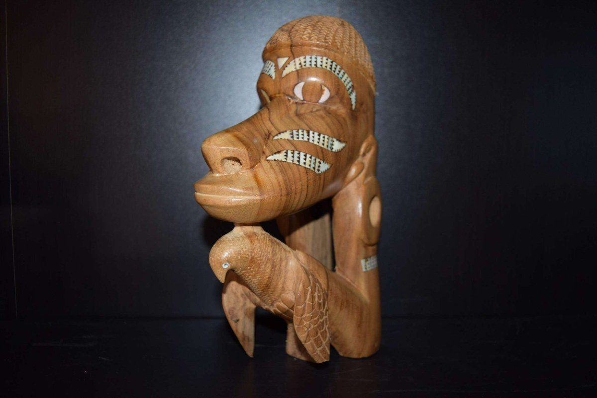
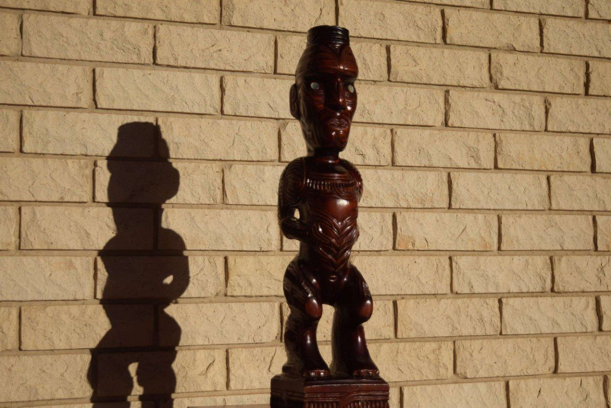

Australia
Dreaming, desert law, and the world’s longest living artistic tradition — from Papunya dot painting to Arnhem Land hollow-log coffins.Dreaming, legea deșertului și cea mai veche tradiție artistică vie din lume — de la pictura în puncte Papunya la sicriele-trunchi din Arnhem Land.

MelanesiaMelanezia
The great engine of ritual invention: Sepik masks, Solomon Islands prow guardians, Vanuatu slit gongs, and the Fijian kava ceremony.Marele motor al invenției rituale: măști Sepik, gardieni de provă din Insulele Solomon, gonguri-fantă din Vanuatu și ceremonia kava fijiană.

MicronesiaMicronezia
A cartographic metaphysics of the atoll: Nauru’s resilience, Tuvalu’s sinking horizon, and Kiribati’s shark-tooth cosmology.O metafizică cartografică a atolului: reziliența statului Nauru, orizontul care se scufundă al arhipelagului Tuvalu și cosmologia dinților de rechin din Kiribati.

PolynesiaPolinezia
Art as genealogical inscription: Samoan siapo and ‘ava, Tongan ngatu, and the taonga of Aotearoa — tiki, toki, and pounamu.Arta ca inscripție genealogică: siapo și „ava” samoane, ngatu tongan și taonga din Aotearoa — tiki, toki și pounamu.

Island Southeast AsiaAsia de Sud-Est insulară
Beyond the Pacific: Dayak baby carriers, Batak medicine vessels, and the shamanic masks of the Malaysian Orang Asli — explored in depth in the Journal.Dincolo de Pacific: port-bebe dayak, vase-medicament batak și măștile șamanice ale poporului Orang Asli din Malaysia — explorate pe larg în Jurnal.